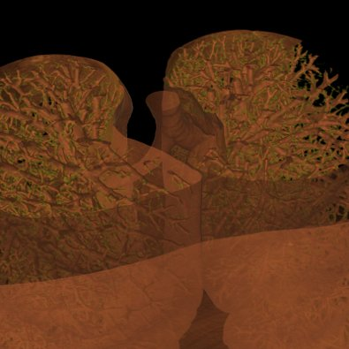

This document is written as a short introduction to YaDiV. It makes no assumptions if the reader belongs to a computer orientated community (3D programmer, visualizing expert) or has a more medical background. Its intention is to give the reader a first overview and make the first steps a little more easy. It is by no means a complete manual.
The program is an experimental software system. It is not a validated safety-conscious medical product. Any use in the medical field requires proper medical supervision.
Any operating system with support for Java (JRE 1.6.0) and Java3D (1.5.2), 256 MB Video Ram, 1 GB Main Memory, Screen Resolution 1280 x 1024 or higher. More RAM definitely helps. A graphic card that supports 3D textures is recommended. Java and Java3D must be installed on the system already, they are not included in this package.
When YaDiV is started, most GUI elements will be disabled. This will change after a DICOM series is loaded. At the moment, YaDiV supports DICOM files with the Photometric Interpretation MONOCHROME2. If you do not have any DICOM files yet, there are some resources in the internet, for example the CT-Cadaver Head or this site.
To open a series of DICOM files, select "File → Open" from the main menu. In the upcomming dialog, open the directory containing the DICOM files and select a single file. YaDiV will automatically open all files in the same directory belonging to the series of the selected file. Series with files stored in more than one directoriy are (currently!) not supported. While the series is loading, you can already browse through the DICOM files which have been loaded so far using the Image Selector.
After loading has finished, the Info Tab of the tool pane displays some short summary of the loaded data, including a voxel data histogram.
The main window of YaDiV shows two elements to explore and analyse the loaded data: the "View 2d" and the "View 3d". Both will display the raw (volume) data as well as segments and other meta info. The volume data rendering is influenced by the selected Region of Interest (ROI), which can be set at the "Misc" panel in the tool pane below.
After a DICOM Series has been loaded, the "View 2d" will automatically show the selected data. Use the Image Selector to select a slice of interest.
The "View 2d" can show slice images in transversal (default), saggital or frontal mode. Switch between the different modes using the "2d View" menu or with the buttons in the "View 2d" title bar.
|
To zoom into a specific region, move your mouse cursor
over the center of your interest and use the mouse wheel to interactively
zoom in and out. Use the right mouse button
to move the magnified region ("panning"). During panning, an overview will
blend in to show your current location in the whole picture. Alternatively
you can enter a specific zoom factor in the element in the "View 2d" title
bar.
Experts Tip: Use the Viewport2d "scaling quality" in the Settings window to enhance zooming quality! This might reduce the rendering speed drastically if the graphic card does not support bilinear/bicubic filtering. |
After a series has been loaded, the "View 3d" can be used to explore the data.
A first and simple visualization tool is the Slice Plane Mode. It can be activated either via the "3d View" main menu or the button in the "View 3d" title bar. When activated, the "View 3d" will render the plane of the image selected in the "View 2d" at the correct 3D-Position.
The Ortho Slice Mode will looks similiar, but also show the last selected slices in transversal, saggittal and frontal mode.
An enhanced 3D visualzation feature is the 2D-Texture Visualization. It basically renders several slices in transversal, sagittal and frontal projection with a low transparency value, allowing a fast and 3 dimensional analysis of the loaded data set. It can be enabled using the "3d View" main menu or the button in the "View 3d" title bar.
The quality of the 2D-Texture Visualization strongly depends on the number of planes which are rendered. This can be choosen in the "View 3d" tab of the main tool pane. Select "1" for the best results - and the highest main memory consumtion. The overall transparency allows to look "through" the data to analyse internal structures and it is possible to choose between a "grey scale" and "pseudo color" colortable.
| Volume Data using 2D Texture | Volume Data using 3D Texture |
The 3D-Texture Visualization is very similiar to the 2D-Texture Visualization, but usually with a usually improved rendering quality. Since not all graphic cards support 3D-textures (yet), both visualization features have been implemented. If the "View 3d" shows only a "white box" instead of the loaded data, your graphic card does not support 3D-Textures.
Experts Tip: The ROI-Selection (in the "Misc" panel in the tool pane) has an immidiate influence on the 2d/3d texture visualization.
Segments are used to identify certain structures in the loaded data series, such a bones, a muscle or an organ. They can be visualized in the "View 2d" and "View 3d" panels. From the computer science point of view a segment is a structure, assigning a "belongs to me" or "does not belong to me" label to each voxel in the loaded data.
To create a segment different segmentation methods can be used and even combined. The second tab in the tool pane (labeled "Segs") contains the tools to create, delete and manage segments.
Complex structures such as the human brain can usually be not segmented with a single segmentation method, YaDiV uses a managed segmentation concept: Each segmentation method selects voxel in a "temporary segment", which can be added to (or removed from) a "real" segment. This way it is possible to combine several segmentation methods.
The temporary selection is always drawn in red. For example, if you have a blue segment wich overlaps with the current selection, the overlapping region will be drawn in purple since red + blue = purple. To make things easier to see, a simple geometric shaped blue segment is used (sphere) and the temorary segment/selection is shaped like a small red box.
| Selection (red) and segment (blue) |
The segment manager consists of three main elements. The first is the segment list containing one or more segment(s). This list is empty at the beginning. Below the list element is a row of five buttons.
To the right side of the segment list is a column of four buttons:
Again the example with a blue segment. If the current selection overlaps with the (red)) temporary selection, the overlapping regions are drawn in purple. If the selection is added to the segment, all red voxels turn purple because they now belong to the segment and the selection at the same time. If add, remove, copy left or copy right are pressed when no segment is selected in the list, nothing happens.
| Selection (red) was added to blue segment |
If the selection is "removed" from the segment, all violet voxels turn red. After removing the selection, they do not belong to the blue segment anymore but are still in the selection.
| Selection (red) was removed to from segment |
Range based segmenting is a very simple but often used segmentation method. With a given minimum and maximum value, it segments all voxels with values in that range. In YaDiV you can use the sliders to define min and max or enter the value directly in the textfield.
Region Grow segmentation requires two start values: a seed and a variance. The seed is a voxel located in the object that should be segmented, the variance defines how much neighboured voxels may differ from the seed value. Use the left mouse button in the View 2d to select the seed and the slider to select the variance. It is also possible to start the region grow with several seeds (use ctrl + left mouse button in the View 2d to select more than one).
Snake & Energy Snake belong to the active contour segmentation methods. They are pretty mathematical and we are still working on a more userfriendly tool dialog.
The manual segmentation tool allows to "draw" or "erase" data similiar to a 2D paint program. While this would usualy take to long for large or complex structures, it can be used to correct a first approach (for example made with region grow) or be a rough start segment for snake/snake energy segmentation. Choose a brush size of your choice and select the "paint" cursor to select voxels in the "View 2d". They will be selected in the temporary segment, as every other segmentation tool does as well - so they need to be "added" to a real segment when you are finished. The adjustable variance can be used to assist the manual segmentation: when enabled, the intensity value of the first voxel (when the left mouse button is pressed down) is used to define a range of selectable voxels. The higher the variance, the larger the range.
The "Simple Geo" segementation tools allow to create segments shaped like simple geometric figures: box, sphere and torus. They are mainly usefull for segment visualization testing during the developement of new visualization techniques.
Contains currently only tools to shrink, grow or invert the selection (temporary segment).
When enabled, the bounding box restricts all segmentation tools the given limits. Select a seed point with the left mouse button, then adjust x-, y- and z-size until the box fits your needs. Alternatively select several seeds (holding down CTRL while clicking allows the selection of more then one seed) and press "Use Seeds". The bounding box will be adjusted so that all selected seeds will fit inside.
When writing this small tutorial, the usual chicken/egg problem occured. To visualize a segment, you need to create a segment first. While creating the segment, you need to visualize to see what you are doing. After you learned how to create a segment (and got an intuitive idea how segments are visualized in 2d), we will look into segment visualization a bit closer.
When a new segment is created, it will automatically shown in the "View 2d". Each segment can be shown or hidden using the "2d View" main menu. The voxels belonging to a segment are drawn in the segment color with a low transparency, so that it is still possible to see what is beneath the segment. If a voxel belongs to several segments, the segment colors are mixed.
Since 3D segment rendering takes more time than 2d (strongly depending on your graphic card), the 3d visualization of a new segment is per default. Each segment can be shown or hidden using the "3d View" main menu or via the "View 3d" tool in the tool pane.
|
||
| Point Cloud | Marching Cube | Texture |
Currently four different segment visualization methods can be choosen.
The 3D segment visualization methods can be set for each individual segment. This can be done in the "view 3d" tool pane.
Experts Tip: The SegRenderer Settings allow to set much more options, e.g. the marching cube smoothing quality or the point distance.
The Volume Raycasting Module produces high quality pictures, looking much nicer than any "View 3d" visualization. It is work in progress and already quite stable but not all features are fully functional yet. Since almost all GUI elements will change until the final release, no help is available yet.
|  | |
| Ray Casting Teaser | |
Haptic Interaction has been removed for the closed source releases.
If you are interested in the internal structure of your DICOM files, select "Misc → DICOM Info" to find detailed information about the DataElements in the loaded series.
YaDiV is still in develeopement and not stable yet. If you experience crashes or unexpected behaviour, please let us know. We are especially interested in (anonomized!) DICOM files that are not displayed correctly or can not be loaded at all.
YaDiV - Yet Another DICOM Viewer
© and written by Karl-Ingo Friese,
Leibniz Universität Hannover, Welfenlab
After a closed-source phase to get some more user feedback, YaDiV will be published as an open source project in the next months.
The following people helped to bring YaDiV to its
current state:
Benjamin Berger,
Philipp Blanke,
Richard Guercke,
Robert Meyer,
Maximilian Müller,
Dominik Sarnow,
Björn Scheuermann,
Marc Christoph Vollmer,
Johannes Wahle and
Yifan Yu
{kind=link}
{kind=link}